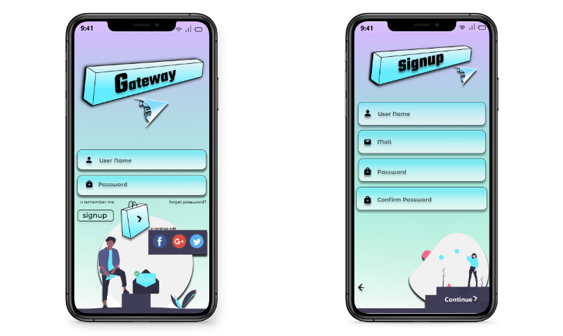
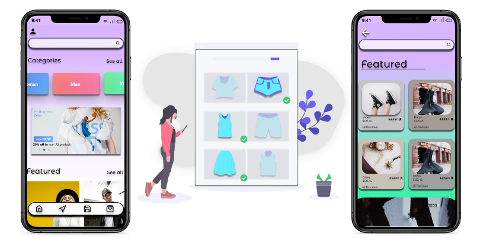
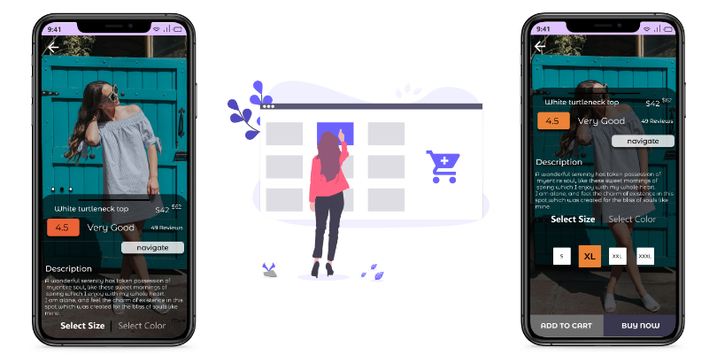
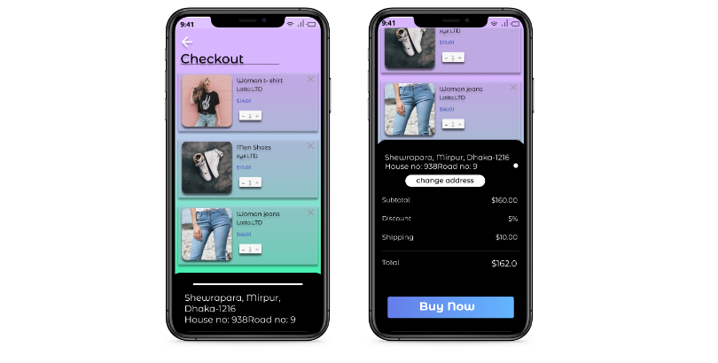
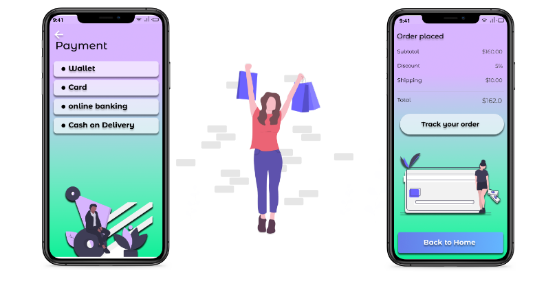

Gateway
An Ecommerce Indoor Navigation App
About project :
The duration of the project was one month. I chose to work on saving time in finding the products in a mall. After a comprehensive study of the whole system and considering the possible intervention points I came up with the concept of “Gateway”.
The Brief:
Considering the growth of fashion and other diversity ecommerce products, study the overall System and propose a solution to reduce the time in searching rather than actual shopping.
Problem Statement:
thousand visitors come to a shopping mall every day. Not only do visitors quickly lose track of what's going on there and quickly miss good and current offers, or find the toilets with their children not quickly enough. In addition, the shops in the multi-stored shopping centers are not even found; and it is particularly problematic for parents whose children can no longer be found or the car cannot be located in the large car park, even after a long search.
The process:
Basing on the result of the feature of the indoor navigation I have
drawn down some features to reduce the time in shopping even-
1) The app will we have a ecommerce facility in which the customer
can search for item which he wants and once if he tap on navigate
button the app with open the indoor navigation system and navigate
the customer to the desired shop and meanwhile the shop owner will
be getting notification of the customer going to visit the shop for
the particular product so that the shop owner would keep the product
for the customer. re- Initially, I started off with a small research
on which it described the problem statement and found that basing on
using the indoor navigation system the task can be done in an easier
manner for the customer.
2) The app will keep track of
your car where it has been parked.
3) Meanwhile the
customer is shopping, he can order some eatables in the app itself
and mention the time of arrival to the shop so that the shopkeeper
will keep the food ready for him.
Swot analysis:
forms of positioning are shaping up to be big business. A recent report from the research firm Markets and estimates the indoor location market – which includes indoor navigation as well as indoor data tracking (such as how long someone spends in a specific store in the mall) – will be worth $41 billion by 2022. Another report, from Opus Research, estimated that, as of 2014, there were some 200 startups working on indoor navigation systems.
Challenges:
1) Distributing real-time offers to customers as per category
2)
Device compatibility for existing and next generation
smartphones.
3) Delivering unified user experience.
4)
Incorporating indoor location based functions.
Business research:
The report "Indoor Location Market by Component (Technology,
Software Tools, and Services), Deployment Mode (Cloud, and
On-premises), Application, Vertical (Transportation, Hospitality,
Entertainment, Retail, and Public Buildings), and Region - Global
Forecast to 2022", The global indoor location market expected to
grow from USD 7.11 Billion in 2017 to USD 40.99 Billion by 2022, at
a Compound Annual Growth Rate (CAGR) of 42.0% during the forecast
period. Hassle-free navigation, improved decision-making, and
increased adoption of connected devices are boosting the growth of
the indoor location market across the globe.
2) Location
analytics segment of software tools is expected to dominate the
indoor location market during the forecast period. Among the
software tools, location analytics is the expected to have the
largest market size in the during the forecast period. Location
analytics is a business intelligence process to generate insights
from location-based data. Location analytics converts raw data as
per the specific location into valuable insights through a more
visual approach. Location analytics analyze data collected from
indoor locations such as retail stores, stadiums, airports, and
other locations.
3) The Asia Pacific (APAC) region is
expected to witness the highest growth rate in the indoor location
market during the forecast period. APAC is expected to have the
highest growth rate during the forecast period, due to the adoption
of indoor location by users and verticals in the region. China,
Australia, New Zealand, and India are the frontrunners in adopting
indoor location via connected devices such as smart phones, tablets,
and smart watches. Additionally, the APAC region has the presence of
a pool of social media users in China, India, and Australia.
User Archtypes:
According to a 2016 Study digital services are much asked for by
customer:
1)Two thirds of the visitors inform themselves about
the center via app and website before the visit.
2)arrival
services(84%)and information on-site(86%) are highly relevent.
3)Each
fourth client wants to use a 3D guidance system among people under
40 it is even each third.
User Advatages
The user can know:
1)Where can i find what?
2) what
current offer are there?
3) How to i get to my desired
store?
Indoor navigation as well as other services make the
shopping experience more enjoyable and enrich the customer.
Retailer Advantages:
There are also a wide range of display options for stores and restaurants. Opening times, photos, information on the product range and contact options increase visibility enormously. Using location-based marketing, retailers reach their target group directly: additional purchase incentives can be employed independent of the location and interests of the user, e.g. via push messages and coupons. The "Around me" function provides an overview of all stores in the user's environment.
Data Flow
1)For online shopping:

2)For indoor shopping in the mall:

typeface :
1)Roboto
2)Open Sans
3)Arial
Login And Signup Interface

Shopping interface

Selecting item Interface

Indoor Navigation system
- once the customer clicks the navigate button then the naviagtion interface opens up and it navigates the customer to the shop
-Meanwhile the shopkeeper get a notification of the customer arrival and he arranges the product for the customer.

cart interface Interface




My Paper work